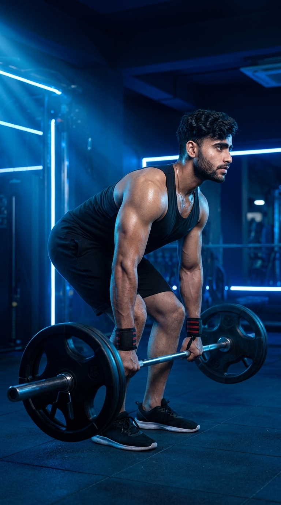

Primary Muscle
Hamstrings
Build Strong Hamstrings, Powerful Glutes, and a Resilient Posterior Chain
The Romanian Deadlift (RDL) is one of the best compound exercises for strengthening the hamstrings, glutes, and lower back while improving hip hinge mechanics. By keeping the knees slightly bent and emphasizing controlled hip movement, this exercise develops posterior chain strength, enhances athletic performance, and reduces the risk of lower-body injuries. Whether your goal is muscle growth, strength, or improved movement quality, the Romanian Deadlift is an essential addition to any training program.

Hamstrings
Barbell
Intermediate
Compound
Discover which muscles drive the Romanian Deadlift and how the supporting muscle groups work together to build a stronger posterior chain, improve hip hinge mechanics, enhance stability, and increase overall lower-body strength.
Biceps Femoris, Semitendinosus & Semimembranosus
Hip Extension & Power
Spinal Extension & Postural Stability
Grip Strength & Torso Stability
Discover how the Romanian Deadlift strengthens the posterior chain, builds muscle, improves hip hinge mechanics, enhances athletic performance, and develops functional strength for better movement both inside and outside the gym.
The Romanian Deadlift primarily strengthens the hamstrings, glutes, and lower back, creating a powerful posterior chain that supports heavy lifting and athletic performance.
Progressive overload during Romanian Deadlifts stimulates significant muscle growth in the hamstrings and glutes, helping create balanced lower-body development.
Practicing the Romanian Deadlift teaches proper hip hinge movement, improving lifting technique and reducing the risk of injury during everyday and athletic activities.
Your core muscles work continuously to stabilize the spine and maintain proper posture, improving balance and control during heavy compound lifts.
Stronger hamstrings, glutes, and lower back help protect the knees and lower spine while improving posture, lifting mechanics, and overall movement quality.
A stronger posterior chain improves sprinting, jumping, acceleration, and overall power, making the Romanian Deadlift valuable for athletes and fitness enthusiasts alike.
Follow these step-by-step instructions to perform the Romanian Deadlift with proper hip hinge mechanics, full control, and correct body alignment to maximize posterior chain development while reducing the risk of injury.
Stand upright holding a barbell in front of your thighs with an overhand grip. Keep your feet hip-width apart, shoulders back, chest up, and knees slightly bent.
Brace your core before every repetition and maintain a neutral spine throughout the lift.
Push your hips backward while lowering the barbell close to your legs. Keep your knees slightly bent without turning the movement into a squat.
Imagine closing a door behind you with your hips while keeping the bar in contact with your legs.
Continue lowering the bar until you feel a deep stretch in your hamstrings while maintaining a flat back and keeping the barbell close to your shins.
Stop your descent before your lower back begins to round.
Press through your heels and drive your hips forward to return to the starting position. Squeeze your glutes at the top without leaning backward.
Let your hips power the movement rather than pulling the weight with your lower back.
Pause briefly at the top, re-establish your core brace, and repeat each repetition with slow, controlled movement while maintaining proper posture.
Focus on quality movement and full hamstring tension rather than lifting heavier weights.
Avoid these common technique mistakes to maximize posterior chain development, improve lifting performance, and perform the Romanian Deadlift safely and effectively.
Allowing your lower back to round increases stress on the lumbar spine and reduces hamstring activation, increasing the risk of injury.
Brace your core, keep your chest proud, and maintain a neutral spine throughout every repetition.
Excessively bending the knees shifts the emphasis away from the hamstrings and glutes, reducing the effectiveness of the exercise.
Keep only a slight bend in your knees and focus on pushing your hips backward during the movement.
Holding the bar away from your legs increases stress on the lower back and decreases lifting efficiency.
Keep the barbell close to your thighs and shins throughout the entire range of motion.
Lifting more weight than you can control often causes poor technique, reduced range of motion, and unnecessary strain on the lower back.
Prioritize perfect hip hinge mechanics and increase the load only after maintaining consistent form.
Apply these expert coaching cues to improve your Romanian Deadlift technique, strengthen your posterior chain, and perform every repetition with maximum control, stability, and confidence.
Initiate every repetition by pushing your hips backward instead of bending excessively at the knees. This keeps the emphasis on the hamstrings and glutes.
Push your hips back—not the bar down.
Allow the barbell to travel close to your thighs and shins throughout the movement to improve leverage and reduce unnecessary stress on the lower back.
The bar should almost slide along your legs.
Keep your chest up, shoulders pulled back, and core braced throughout every repetition to protect your spine and maximize force production.
Your back position should never change during the lift.
Perform each repetition slowly and deliberately to maximize hamstring tension, improve muscle activation, and maintain excellent technique.
Control every inch of the movement for the best results.
Progress from mastering proper Romanian Deadlift technique to lifting heavier loads while maintaining excellent hip hinge mechanics, full control, and maximum posterior chain strength.
Learn the hip hinge movement using bodyweight or a light dowel before adding external resistance. Focus on posture, balance, and controlled movement.
Hip hinge mechanics, posture, hamstring flexibility, and core stability.
Practice with a light barbell while maintaining a neutral spine, slight knee bend, and smooth hip movement throughout every repetition.
Bracing, bar path, movement control, and consistent technique.
Progressively add weight while maintaining proper hip hinge mechanics, full hamstring tension, and complete control throughout each repetition.
Progressive overload, posterior chain strength, and flawless lifting mechanics.
Continue progressing with heavier loads while preserving perfect technique, controlled movement, and safe lifting habits for long-term strength development.
Maximum strength, hip power, muscle growth, and long-term progression.
Find answers to common questions about Romanian Deadlift technique, muscles worked, proper form, range of motion, training frequency, and how to build a stronger posterior chain safely and effectively.
Romanian Deadlifts primarily target the hamstrings, glutes, and erector spinae while the core, forearms, and upper back stabilize the movement throughout each repetition.
Lower the bar until you feel a deep stretch in your hamstrings while maintaining a neutral spine. The exact depth depends on your flexibility and mobility, not on touching the floor.
Yes. Keep a slight bend in your knees throughout the exercise. Excessive knee bend turns the movement into a squat and reduces hamstring involvement.
Yes. Beginners should first master the hip hinge using light weights before progressing to heavier loads while maintaining proper technique.
For muscle growth, perform 3–4 sets of 8–12 repetitions. For strength, use heavier loads for 4–6 repetitions while maintaining perfect hip hinge mechanics.
Most people benefit from performing Romanian Deadlifts one to two times per week, depending on their training volume, recovery, and overall fitness goals.
Explore other leg exercises that complement the Romanian Deadlift and help you build stronger hamstrings, glutes, quadriceps, and overall lower-body strength through both compound and isolation movements.


Continue building stronger legs with step-by-step exercise guides covering proper technique, muscles worked, common mistakes, expert coaching tips, and progression strategies for every fitness level.